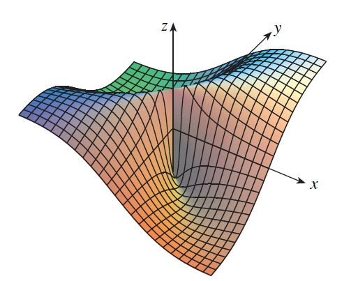
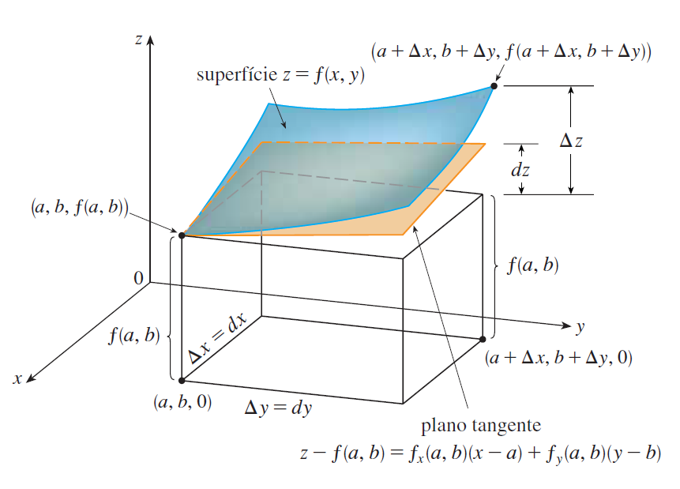
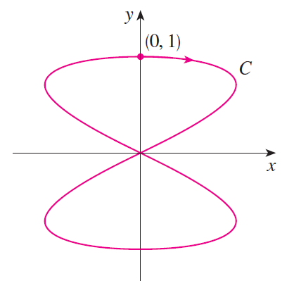

PARTE 2 · AULAS 09–15
Derivadas parciais, plano tangente e regra da cadeia
O conceito de derivada é estendido para funções de várias variáveis. Estudaremos taxas de variação em diferentes direções coordenadas, derivadas de ordem superior, diferenciabilidade, planos tangentes, aproximações lineares, regra da cadeia e derivação implícita.
1. Da derivada de uma variável às derivadas parciais
Para uma função de uma variável,
a derivada \(f'(a)\) mede a taxa instantânea de variação de \(f\) quando \(x\) varia nas proximidades de \(a\).
Para uma função de duas variáveis,
existem duas variáveis independentes. Portanto, podemos estudar separadamente como \(z\) varia quando modificamos \(x\) mantendo \(y\) fixo, ou quando modificamos \(y\) mantendo \(x\) fixo.
Essas taxas de variação são denominadas derivadas parciais.
mede a variação de \(f\) em relação a \(x\), mantendo \(y\) constante.
mede a variação de \(f\) em relação a \(y\), mantendo \(x\) constante.
2. Definição das derivadas parciais
Seja \(f\) uma função de duas variáveis definida nas proximidades de \((a,b)\). A derivada parcial de \(f\) em relação a \(x\) é definida por
desde que esse limite exista.
Analogamente, a derivada parcial em relação a \(y\) é
Observe que, ao calcular \(f_x\), a variável \(y\) é tratada como constante. Ao calcular \(f_y\), a variável \(x\) é tratada como constante.
3. Interpretação geométrica
Considere a superfície
e um ponto
Se fixarmos \(y=b\), o plano vertical \(y=b\) corta a superfície em uma curva \(C_1\). Essa curva pode ser escrita como
A inclinação da reta tangente a essa curva em \(P\) é
Da mesma maneira, fixando \(x=a\), obtemos uma segunda curva \(C_2\), cuja reta tangente em \(P\) possui inclinação

As derivadas parciais \(f_x(a,b)\) e \(f_y(a,b)\) representam as inclinações das retas tangentes às curvas obtidas pela interseção da superfície \(z=f(x,y)\) com os planos verticais \(y=b\) e \(x=a\), respectivamente.
4. Cálculo de derivadas parciais
Considere
Para calcular \(f_x\), consideramos \(y\) constante:
Para calcular \(f_y\), consideramos \(x\) constante:
No ponto \((1,0)\),
Assim, no ponto correspondente da superfície, a inclinação na direção coordenada \(x\) é zero, enquanto a inclinação na direção coordenada \(y\) é igual a \(2\).
5. Derivadas parciais de ordem superior
Como \(f_x\) e \(f_y\) são também funções de \(x\) e \(y\), podemos derivá-las novamente.
As derivadas \(f_{xy}\) e \(f_{yx}\) são chamadas derivadas parciais mistas.
6. Teorema de Clairaut
Suponha que \(f\) esteja definida em uma região aberta contendo \((a,b)\). Se \(f_{xy}\) e \(f_{yx}\) forem contínuas nessa região, então
Portanto, sob condições adequadas de regularidade, a ordem em que efetuamos as duas derivações não altera o resultado.
Seja
Primeiro,
Logo,
Por outro lado,
Portanto,
7. Plano tangente
Para uma função de uma variável, a reta tangente fornece uma aproximação linear local da curva.
Para uma função de duas variáveis, o objeto análogo é um plano tangente à superfície.
Seja
e considere o ponto
Sob condições adequadas de diferenciabilidade, a equação do plano tangente é
Equivalentemente,

8. Exemplo de plano tangente
Considere
no ponto \((1,1)\).
Inicialmente,
As derivadas parciais são
Portanto,
Substituindo na equação do plano tangente,
Simplificando,
9. Linearização e aproximação linear
Nas proximidades de \((a,b)\), uma superfície diferenciável pode ser aproximada por seu plano tangente.
Definimos a linearização de \(f\) em \((a,b)\) por
Para pontos \((x,y)\) suficientemente próximos de \((a,b)\), temos a aproximação

10. Exemplo de aproximação linear
Para
já encontramos a linearização em \((1,1)\):
Podemos utilizá-la, por exemplo, para aproximar \(f(1{,}02,0{,}99)\).
Assim,
11. Diferenciabilidade
A existência das derivadas parciais em um ponto, isoladamente, não é suficiente para garantir que a função seja diferenciável nesse ponto.
A diferenciabilidade exige que a função seja localmente bem aproximada por uma transformação linear — geometricamente, por seu plano tangente.
Escrevendo
uma função diferenciável satisfaz localmente
em que
quando
Se \(f_x\) e \(f_y\) existem em uma vizinhança de \((a,b)\) e são contínuas em \((a,b)\), então \(f\) é diferenciável em \((a,b)\).
É importante observar a direção lógica:
A simples existência das derivadas parciais não permite concluir diferenciabilidade.

12. Diferenciais
Se \(z=f(x,y)\) é diferenciável, definimos o diferencial total de \(z\) por
Para pequenas variações \(dx\) e \(dy\), o diferencial fornece uma aproximação para a variação real da função:
Portanto,

13. Regra da cadeia
Em muitas aplicações, as variáveis \(x\) e \(y\) não são independentes de um parâmetro externo. Suponha que
Nesse caso, \(z\) também se torna uma função de \(t\):
A regra da cadeia fornece
Uma forma útil de interpretar essa expressão é observar os possíveis caminhos de dependência:
A taxa total de variação de \(z\) é obtida somando as contribuições correspondentes a esses caminhos.

14. Exemplo da regra da cadeia
Considere
com
e
Temos
Aplicando a regra da cadeia,
Como \(x=t^2\) e \(y=e^t\),
15. Regra da cadeia com duas variáveis intermediárias
Considere agora
em que
Então \(z\) é uma função de \(s\) e \(t\):
Aplicando a regra da cadeia,
16. Organizando a regra da cadeia
Quando existem várias variáveis intermediárias, é útil organizar as dependências por meio de um diagrama.
Para calcular uma derivada em relação a uma variável independente:
1. identifique todos os caminhos que ligam essa variável à variável dependente;
2. multiplique as derivadas ao longo de cada caminho;
3. some as contribuições dos diferentes caminhos.
Por exemplo,
produz
17. Derivação implícita
Nem sempre uma superfície é apresentada explicitamente na forma
Em muitos problemas, as variáveis estão relacionadas por uma equação
Sob condições adequadas, essa relação pode definir localmente \(z\) como função de \(x\) e \(y\):
Portanto,
18. Obtendo \(z_x\)
Derivando
em relação a \(x\), com \(y\) mantido constante, obtemos pela regra da cadeia
Se
então
19. Obtendo \(z_y\)
Derivando agora em relação a \(y\),
Portanto,
Assim, quando \(F_z\neq0\),
20. Exemplo de derivação implícita
Considere a superfície definida implicitamente por
Definimos
Então,
Para \(z\neq0\),
Portanto,
e
21. Erros conceituais frequentes
1. Derivar todas as variáveis simultaneamente.
Em uma derivada parcial, as demais variáveis independentes
devem ser tratadas como constantes.
2. Confundir existência de derivadas parciais com
diferenciabilidade.
Uma função pode possuir \(f_x\) e \(f_y\) em um ponto e ainda
assim não ser diferenciável nesse ponto.
3. Utilizar o plano tangente sem verificar as
hipóteses necessárias.
A fórmula do plano tangente está associada à
diferenciabilidade da função.
4. Esquecer as dependências na regra da cadeia.
Cada caminho entre as variáveis deve contribuir para a
derivada total.
5. Esquecer o sinal negativo na derivação
implícita.
Das relações
\(F_x+F_zz_x=0\) e \(F_y+F_zz_y=0\)
surge o sinal negativo.
6. Dividir por \(F_z\) sem verificar se
\(F_z\neq0\).
Essa condição é essencial para escrever localmente
\(z=z(x,y)\) por essa abordagem.
Explore superfícies, cortes coordenados e planos tangentes. Uma experiência útil é representar uma superfície \(z=f(x,y)\), escolher um ponto e comparar localmente a superfície com seu plano tangente.
STEWART, James. Cálculo. Volumes 1 e 2. São Paulo: Cengage Learning.
ANTON, Howard; BIVENS, Irl; DAVIS, Stephen. Cálculo. Porto Alegre: Bookman.
THOMAS, George B.; WEIR, Maurice D.; HASS, Joel. Cálculo. São Paulo: Pearson.